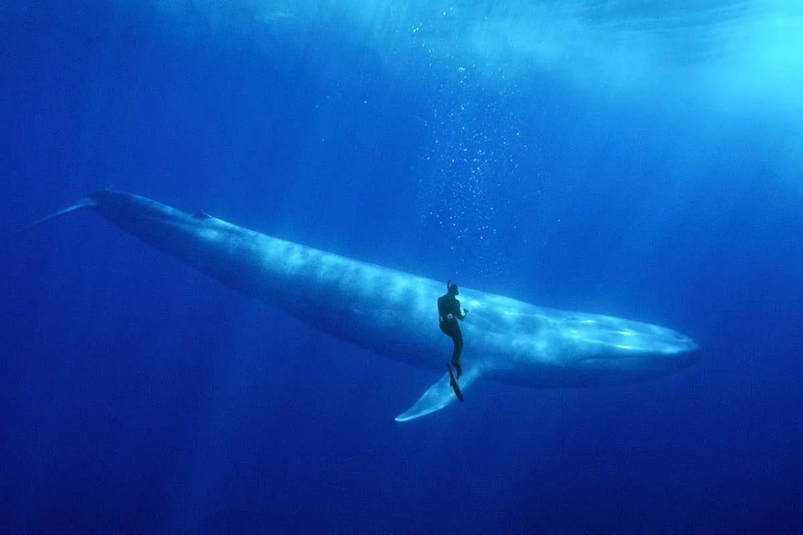
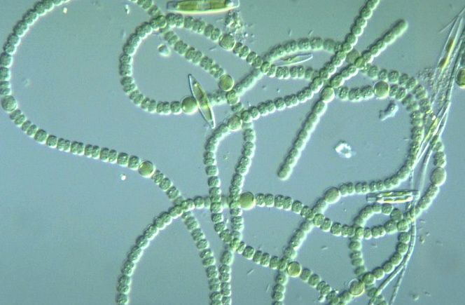
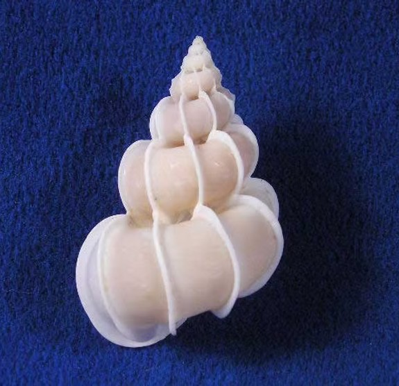
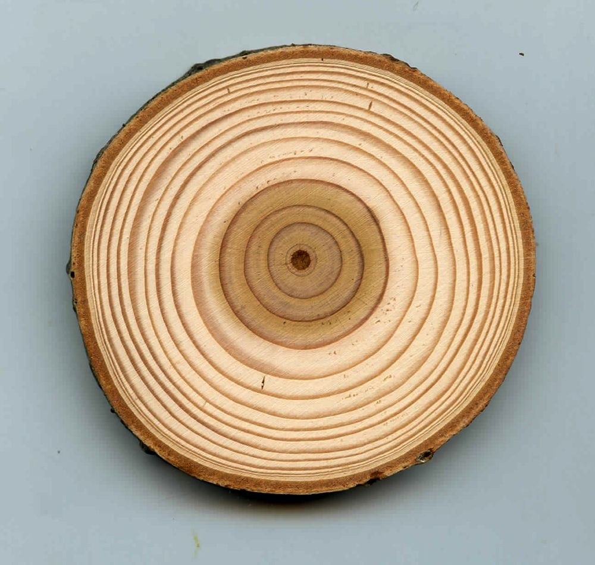
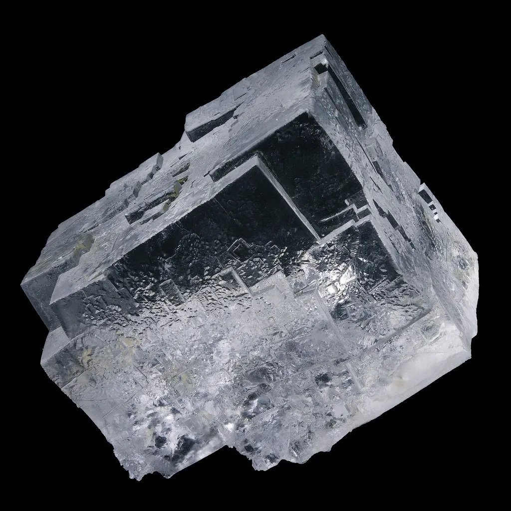
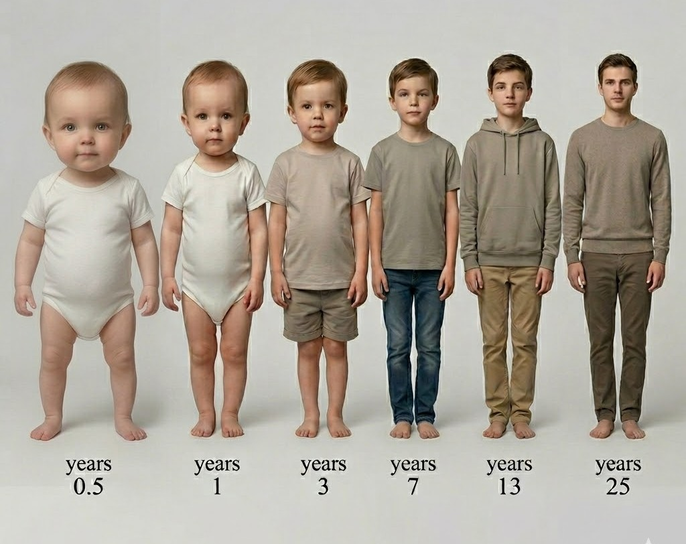
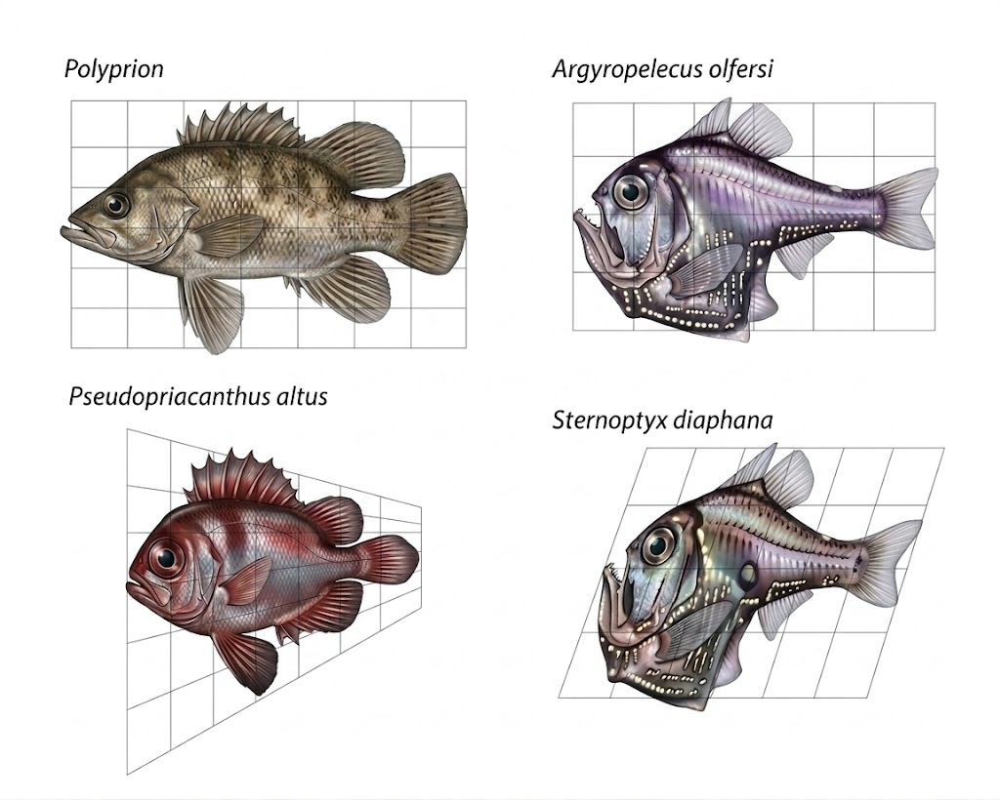
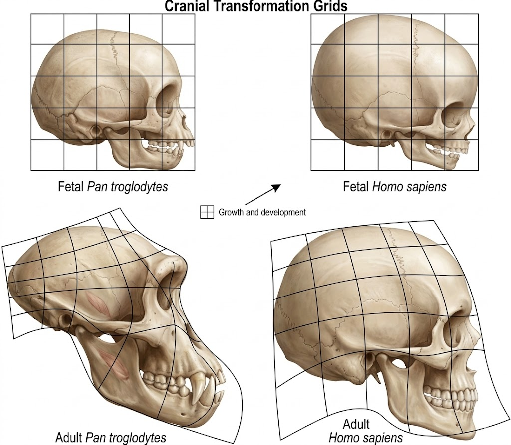

How size affects form, function, and the pace of life
In previous chapters we have looked at how the numbers or measures of natural things change over time and space as they grow or move. We looked at the pattern of growth in the size of sea shells, where the chamber diameter grows by a constant factor from season to season, or the widening girth of a tree, which adds adds a new ring each year. However, objects are not just defined by one measurement or number -- they have shape, form, and internal structure. They extend in more than one dimension. A tree has height and girth, branching structures and total volume of wood. A shell chamber has radius, volume, and surface area and curvature; the shell spirals around itself as it grows. The forces of nature and the environment may shape the relationships between the quantities that define the form of these objects. In this chapter we will look at some of the mathematics that is needed to describe these relationships and the biology and physics that underlies them.
Walking through the lush green temperate rainforests of the pacific coast of America you cannot help but be awestruck by the sheer magnitude of the colossal redwoods, firs, cedars, and hemlocks as they reach to the heavens in a race with their neighbors for that scarce quantity -- the sun. Trees are rewarded for their ability to grow to massive heights, designed through the pressures of evolution to overcome gravity and build the structures and proportions to support themselves in order to capture the suns energy to sustain themselves.
After a life that can last as long as one thousand years they fall down and, their remains stay on the forest floor like large carcasses, becoming habitats for organisms of all kinds and sizes, nursing new trees, feeding beetles, fungi, microorganisms and bacteria. The smallest of these are 100 million times smaller in size and 21 orders of magnitude smaller in weight than the ancient trees on which they thrive. These impressive ranges in sizes repeat themselves across the animal kingdom. In the oceans there are the majestic whales and the tiniest phytoplankton, and on land the mammals range from the lumbering elephants to the tiniest shrews. That living things exist across such a large scale, speaks to the extraordinary versatility of life's building blocks, cells. Single celled organisms occupy the small end, but there is a limit to how large a cell can grow. Larger organisms are built from clusters of cells, which in turn differentiate and build structures to solve problems like metabolism, distribution of nutrients, elimination of waste and building structures to support growth and movement in water and on the land. Nature imposes some rules on how these properties relate across these scales.

Blue whale, with homo sapiens in the foreground
Cyanobacteria -- an early example of simple multi-cellular life.The form of an object is defined by the relative properties of its different dimensions and properties, such as length, width, surface area and volume. If an object grows without changing its proportions, shape or form, we call this isometric growth ("same measure"). Sea shells often grow by adding chambers each season, creating a copy of the shell with the same proportion, the cross section of a tree is approximately circular, and it retains that optimal shape as it grows. Similarly halite crystals grow with an approximately cubic structure across many scales, due to the underlying atomic arrangement of sodium and chlorine of which they are composed. Organisms that grow isometrically are often following simple growth laws or are taking some optimal form for stability or efficiency.

Wentletrap shell
Circular cross section of a tree
Cubic form of a halite crystalIf the different proportions of an objection grow at different rates and the shape or form changes as a consequence we call this allometric growth ("other measure"). The vast majority of objects in the natural world grow allometrically -- subject to evolutionary pressures and the constraints of physics and geometry. The tadpole is well adapted to life in a pond, but needs to change form and grow legs as it matures in order to succeed on land. As humans grow from infancy to adulthood their head barely changes in size as the rest of the body does. The limbs grow proportionally faster compared to the torso. As a fiddler crab body grows with age, one claw barely grows at all, and the other grows disproportionally fast. The examples of allometric growth in Fig. 5.3 below are stark. The changes in shape are driven by different evolutionary pressures and adaptations for different phases of life.

Humans changing proportions as they grow.Not all examples of allometric growth are as pronounced as those in Fig. 5.3. In cases where the differential growth rate of different dimensions may be more subtle the differences are revealed through careful measurement and comparison. For example, while it may not be obvious to the eye, the width of a tree grows proportionally faster than its height in order to provide enough girth to support the tree as it grows. The relationship between height and width follows a power law determined by the the underlying physics.
Given the large range of sizes that organisms can take, and the different habitats they live in, it is not surprising that, physics places some constraints on how large an organism can grow and the form they must take. Organisms need to absorb energy through their surface to supply the cells that allow them to function. The number of cells grow in proportion to the volume of the organisms, but the energy that can be absorbed grows in proportion to the surface area. In a similar way, under the force of gravity the the amount of weight an organism needs to support itself scales in proportion to its volume, but the strength of the structures that support this weight scales with the cross sectional area. As we will see, surface area and volume grow at different rates if the shape of an organism stays the same as it grows. This simple geometric fact limits the extent to which organism can grow without changing shape, and can help explain the nature of the changes in shape that we see and the relationships between them. For example, comparing an elephant with a shrew, in Fig. 5.4, we observe the elephant has proportionally thicker legs to support its weight. The elephant also has proportionally larger ears -- a mechanism that evolved to increase its surface area to dissipate all the waste energy produces by its large body. The shrew has the opposite problem, it looses energy through its proportionally larger surface area so fast that it need to eat more than its mass in food every day to have enough fuel to stay warm. It can minimize energy loss through its surface area by adopting a more spherical shape than the elephant (along with other adaptations -- such as a furry coat).
When we hear the buzz of a tiny humming bird and watch it hover near a flower, its wings are blurred, moving at fifty beats per second. This is a frequency that is beyond the ability of our eyes to resolve. Casting our eyes higher up in the sky we may be fortunate enough observe a bald eagle, soaring in the wind looking for prey. It pumps its wings slowly and gracefully to stay aloft and shift direction. There is a pattern in the rhythm of wing strokes: the larger the bird, the slower the beat of their wings.
The beating rate of wings, the walking rate of animals with legs, the beating of the heart, the interval between breaths, the rate at which food is consumed and metabolized, these are the rhythms of life. And they all slow down in systematic ways the larger an organism is. A blue whales heart beats perhaps 8 times a minute, when it is cruising through the deep oceans. A shrew's heart beats a thousand times a minute. The ratio of these rates is over 100. It turns out if you raise this ratio to the power of 4, you get something close to the ratio of their masses. This is an example of a power law relationship. Underlying this mathematical connection are fundamental physical principles that shape how organisms move and function.
The ultimate living clock is lifespan. Remarkably, lifespan scales with body mass in almost exactly the inverse proportion as heart rate. Larger animals live longer in direct proportion to their slower pulse and as consequence the total number of heartbeats in a lifetime is approximately the same for all mammals, regardless of size: somewhere in the range of one to two billion beats per lifetime. The shrew uses its billion heartbeats in two years; the elephant spreads the same allocation across sixty. The regularity of the pattern — across species ranging over seven orders of magnitude in body mass — suggests that something fundamental and mathematical underlies it.
In this section we will develop the mathematics of scaling and power laws to help us understand how the different geometric properties of growing (or shrinking) objects change in relation to one another.
As noted in Section 1, growth is isometric when the proportions of the form remain the same as the object grows. For example, in the diagram below the base of the right triangle below grows from $b=4$ to $b=5$, growing by a factor of $\frac{5}{4}$. If the growth is isometric the height also grows by the same factor. This means the height growing from $h=3$ to $\frac{5}{4}\times 3$ = 3.75. The new triangle is geometrically similar to the initial triangle.
Our goal is to determine how related quantities, like area and volume, change if the linear dimensions of the object remain in the same proportion as an object gets larger. Let's start with a simple shape: a square of side length 1 unit. It has area equal to 1 unit$^2$. If we double every length the side becomes 2 units, and the area 4 units. We need exactly 4 copies of the original square to fill the new one. If we triple the length of every side, we need 9 copies. The pattern is clear, if we the scale the sides by factor $k$, the area scales by factor $k^2$.
The same argument works in three dimensions. A unit cube has volume $1 \text{ unit}^3$. Scale the side by $k$ and the new cube needs $k^3$ unit cubes to fill it. It also has $k^2$ times as many unit squares on its surface — so its surface area scales as $k^2$.
We can generalize this results as follows. Let $L$ be any characteristic length of an object — side length of a cube, radius of a sphere, height of a cylinder, etc. If we use scale factor $k$, then:
If every length dimension of an object is scaled by the same factor $k$, $$L\to kL$$then areas scale by $k^2$ and volumes scale by $k^3$:
These laws apply to any shape that is scaled proportionally, not just cubes. We can verify this directly when there is a formula for the areas and volumes of a given shape, as in the examples below:
Let's use the formulas for circles, spheres and cylinders to confirm this scaling law directly, when every length (radius, height, etc. ) is multiplied by the same factor $k$.
Circle (radius $r$):
Area: $A= \pi r^2$. Scaling the radius $r$ up by factor $k$, the new area is $\pi(kr)^2 = k^2 \cdot \pi r^2=k^2A$. So $A\to k^2A$; The area scales by factor $k^2$.
Circumference: $C= 2\pi r$. When $r\to kr$, we have $C\to kC$, as expected for a length.
Sphere (radius $r$):
Surface area: $A= 4\pi r^2 \to 4\pi (kr)^2= k^2 \cdot 4\pi r^2=k^2A$.
Volume: $V= \frac{4}{3}\pi r^3 \to \frac{4}{3}\pi (kr)^3= k^3 \cdot \frac{4}{3}\pi r^3=k^3V$.
Cylinder (radius $r$, height $h$):
Lateral surface area: $A= 2\pi r h \to 2\pi (kr)(kh) = k^2 \cdot 2\pi rh=k^2A$.
Volume: $V= \pi r^2 h \to \pi(kr)^2(kh) = k^3 \cdot \pi r^2 h=k^3V$.
For more general shapes, without specific formulae, we use the following reasoning to prove the scaling law:
Any smooth surface can be tiled by arbitrarily small squares of side $\varepsilon$. When every length is scaled by $k$, each tiny square becomes a $k\varepsilon \times k\varepsilon$ square with area $k^2 \varepsilon^2$. Since every tile scales by the same factor, the total area scales by $k^2$, regardless of the shape's complexity. The same argument works for volumes using tiny cubes. This is why the law applies equally to a cube, a sphere, or anything that scales proportionally in all dimensions.
Let's look at a few examples of how we can use these scaling laws for more generalized shapes to answer questions about biology and physics:
Consider a cyanobacterial (blue-green algae) with cell size 2.0 $\mu$m. Suppose at its current size it produces waste at a rate of 3 units per second and is able to diffuse waste at a rate of 15 units per second. As the cell grows isometrically its volume and surface area grow according to the scaling laws. The rate it produces waste scales at the same rate as volume. The rate it diffuses waste through its membrane, scales as the surface area.
Answer:
The animal kingdom is filled with mammals of all sizes, from the tiny shrew to the giant blue whale. You may have noticed there are not a of giant humanoids on earth, the Yeti and Sasquatch not withstanding. To see why, let's do a thought experiment. Imagine if there were giant humanoids five times as tall as a 6ft tall person, who appeared exactly like a human in every proportion. How would this giant fare?
We see the shape of the bones (length to diameter ratio) needs to be different to provide comparable support for organisms of different sizes.
The examples above illustrate something interesting about the scaling laws: because area and volume scale at different rates for the same scaling factor $k$ physical and biological constraint may limit the degree to which isometric growth is possible. A key measure that will keep coming up is the surface area to volume ratio of an object, or $A/V$.
Let's calculate explicitly this for a few shapes:
A/V for a Cube
For a cube with side length there are six faces, each of area $L^2$, so for the cube $A=6L^2$ and $V=L^3$. This leads to the following ratio $$A/V=\frac{6}{L}.$$
A/V for a sphere
We can also show that for a sphere of radius $r$, $A=4\pi r^2$ and $V=\frac{4}{3}\pi r^3$. Dividing, we get: $$A/V=\frac{3}{r}.$$
Importantly the ratio is proportional to the inverse of the characteristic length $L$. As $L$ increases, $A/V$ decreases. Using the the scaling laws for area and volume, we generalize for any shape:
If every length dimension of an object is scaled by the same factor $k$, $$L\to kL$$ then $A/V$:
This inverse relationship means that when an organism grows isometrically, this ratio decreases. A decreasing surface area to volume ratio can have implications for the strength and function of and object or organisms as they grow. For example, a water droplet is held together by surface tension, which is proportional to its area, the amount of water that surface tension needs to hold together into a droplet is proportional to its volume. If the surface area to volume ratio drops below a certain threshold, determined by environmental conditions, the water droplet will not hold together and will split into two or more droplets. Similarly, as in the algae example above, a cell collects the nutrients it needs to sustain itself and expels waste through its membrane. The amount that can diffuse through the membrane scales with surface area, yet the amount of material that needs to be diffused scales with the volume. A cell that grows too large cannot sustain itself. One solution is to split itself in two. The worked example below illustrates quantitatively how splitting a spherical cell can be a mechanism to increase the surface area to volume ratio.
A spherical cell of radius $r$ has A/V $= 3/r$. When it divides into two equal daughters, each daughter has volume $V/2$.
Note: Splitting a cell in half by volume does not reduce the size by half.
Using the inverse scaling law for surface areas with scale factor $k=0.794$ from above
Cell divisions increases A/V of the daughter cells by 26%. Each daughter can absorb nutrients faster per unit volume than the mother cell could.
If an object or organism has a preferred shape or form for some structural reason, biological and physical constraints may create a limit to how large it can grow. Under these constraints an object might stop growing, it may split (in the case of a cell or water droplet), or it could change shape. For an example of the latter, when a water droplet falls and gathers more moisture its shape deviates from a sphere when it is small into a flattened spheroid (oblate spheroid) as it grows. This change in shape increases the surface area, providing more surface tension to contain the increasing volume. Eventually, however, this shape becomes unstable; the droplet pinches off to form two or more droplets. Body organs that are designed to absorb nutrients or other essential components of life, such as the intestines and lungs have adapted highly convoluted shapes to maximize the surface area to volume ratio.
The lung must absorb about 250 mL of O₂ per minute. If it were a smooth sphere of radius $r = 10$ cm fitting inside the thorax, its surface area would be $4\pi r^2 \approx 1{,}257$ cm² — far too small. Nature's solution: subdivide the interior into roughly 500 million alveoli, each a tiny sphere of radius $r_a \approx 0.1$ mm.
Half a tennis court packed into 6 litres. The A/V ratio of the alveolar surface is $3/r_a = 300$ cm⁻¹ — the same as a tiny cell — achieved not by making the organ small but by making its inner surface fractal-like. Each level of subdivision multiplies effective surface area roughly tenfold while adding negligible bulk volume.
If a shape is allowed to change, with different dimensions growing at different rates (i.e. allometric growth), the scaling laws between length, area, volume, and the ratios between these quantities are different than the ones we have derived in this section. We will find that in many circumstances there are power law relationships between these quantities and the powers deviate from the powers of 1,2,3 and -1 that follow from isometric growth. We will explore these relationships and how to find them in Section 2.3. But first. lets learn a little bit about the mathematics of power laws and proportionality.
Consider the formula for the volume of a sphere: $$V=\frac{4}{3}\pi r^3$$
This is an example of a power law. Volume $V$ depends on the third power of the radius $r$. We can say $V$ is proportional to $r^3$, or symbolically
$$V\propto r^3.$$This is just another way of saying that if $r$ increases by factor $k$, then $V$ increases by a factor of $k^3$ .
The constant $\frac{4}{3}\pi$ in front of the $r^3$ in the formula for the volume is called the proportionality constant. In the case of the sphere, the proportionality constant is determined by the geometry. If a power law relationship exists between two variables without a known or derived formula, as is most often the case in biology, the proportionality constant is determined by measurement. In general two quantities $Y$ and $X$ follow a power law relationship when $Y = a \cdot X^p$, where : where $a$ the proportionality constant and $p$ is a constant power or exponent.
A power law exists when quantity $Y$ depends on quantity $X$ as:
where $a$ the proportionality constant and $p$ is a constant power or exponent.
Let's consider how the behavior of these power laws change depending on the proportionality constant $a$ and the power $p$.
The behavior of $Y = a \cdot X^p$ depends critically on the exponent $p$. Four qualitatively distinct regimes emerge, each with a different character of growth or decay. The explorer below lets you compare two power laws side by side — drag the sliders or type values directly, and switch to log‑log scale to see how the exponent controls the shape.
Superlinear growth — $p > 1$
When $p > 1$, the curve bends upward with increasing steepness: each unit gained in $X$ results a larger gain in $Y$ than the unit before. For example, the surface area of a sphere is proportional to $r^2$ and volume proportional to $r^3$, so doubling the radius of a sphere multiplies its surface area fourfold but its volume eightfold. This accelerating divergence between area and volume is ultimately behind most biological size constraints. The larger the exponent, the more rapidly the function rises: $X^3$ outpaces $X^2$, which outpaces $X^{1.5}$, but all share the same qualitative upward acceleration.
Direct proportionality — $p = 1$
When $p = 1$, $Y = aX$. This is a straight line through the origin. $X$ and $Y$ grow proportionally at the same rate. For example, the circumference of a circle grows in direct proportion to its radius ($C = 2\pi r$, so $a = 2\pi$); Direct proportionality is the reference case against which the other regimes are compared: super linear functions ($p > 1$) outpace this line, and sublinear functions ($0 < p < 1$) eventually come below it.
Sublinear growth — $0 < p < 1$
When $0 < p < 1$, $Y$ still increase with $X$ but with diminishing returns: each additional unit increase in $X$ yields a smaller increase in $Y$. For an example consider the walking speed $v$ of mammals as it varies with the leg length $L$ across species. To a good approximation $v\propto \sqrt{L}$, (so $p = 1/2$) -- we'll see why below. Larger animals walk faster but doubling the leg length does not double the natural walking speed.
Fractional exponents, such as $1/2$, $1/3$, $3/4$, $-1/4$ , can arise when the underlying physics couples quantities of different dimension. For example, for the period $T$ of pendulum of length $L$, $T \propto L^{1/2}$, which leads to a preferred walking speed $v$ of an animal is $v \propto L^{1/2}$, where $L$ is leg length. Similarly the relationship between mammalian heart rate and mass ($f \propto M^{-1/4}$) and, and the radius of a tree trunks and mass ($r \propto M^{3/8}$) can be traced back to by the geometry or physics of the situation. You can explore this more in the Dimensional Analysis section below. We will also see fractional exponents arise in the study of fractals, in networks, and phase transitions.
Inverse power laws — $p < 0$
When $p < 0$, $Y$ decreases as $X$ grows. The function is always positive (for positive $X$) but falls toward zero getting closer and closer but never reaching it. We call this asymptotic behavior. As an example, the surface-area-to-volume ratio of a cell falls as the cell enlarges: double the radius and the ratio halves. This is why large cells struggle to supply their interiors by diffusion alone — the interior volume grows faster than the surface through which nutrients must enter.
The role of the proportionality constant $a$
While $p$ determines the shape of the power law curve — whether it accelerates, is linear, decelerates, or falls — the constant $a$ controls its vertical scale. Increasing $a$ by any factor stretches the entire curve upward by exactly that factor at every value of $X$. The shape is unchanged. In biological terms, $a$ captures the material or physiological factors specific to a taxon or environment: it is what differs between a mammal and a reptile obeying the same metabolic scaling exponent $p$, or between two fish species following the same length-weight relationship with different body densities.
A physiologist measures the resting metabolic rates of two birds:
| Species | Body mass $M$ | Metabolic rate $B$ |
|---|---|---|
| House sparrow | $M_1 = 25\ \text{g}$ | $B_1 = 0.25\ \text{W}$ |
| Mute swan | $M_2 = 10{,}000\ \text{g}$ | $B_2 = 25\ \text{W}$ |
Assuming a power law $B = a \cdot M^p$, find the exponent $p$ and the proportionality constant $a$.
Step 1 — Eliminate $a$ by forming a ratio. Dividing the power law for the swan by the power law for the sparrow:
The proportionality constant cancels — we need only the ratio of the two measurements:
Step 2 — Solve for $p$ using logarithms.
Step 3 — Find the proportionality constant $a$. Using the sparrow data with $p = 3/4$:
Interpretation. The exponent $p \approx 3/4$ is Kleiber's law, first reported by Max Kleiber in 1932. It holds from bacteria to blue whales — more than 20 orders of magnitude in mass. The proportionality constant $a \approx 4\ \text{W/kg}^{3/4}$ is Kleiber's constant. We will explore Kleiber's Llaw more below.
A leg swings like a pendulum of length $L$: The period of a pendulum $T \propto L^{1/2}$, stride length $\ell \propto L$, so preferred walking speed
Calibrated against a human ($L = 0.90\ \text{m}$, $v = 1.4\ \text{m/s}$), we get $a \approx 1.48\ \text{m}^{1/2}\,\text{s}^{-1}$.
Predictions.
Elephant ($L = 1.8\ \text{m} = 2L_\text{human}$). By the scaling rule $v = 1.4\times\sqrt{2} \approx 2.0\ \text{m/s}$ . The observed walking speed is 1.8–2.5 m/s.
Mouse ($L = 0.02\ \text{m}=0.022L_\text{human}$). So $v =1.4\times \sqrt{0.22} \approx 0.21\ \text{m/s}$. The observed walking speed is 0.2–0.3 m/s.
The same power law, with the same constant, spans three orders of magnitude in leg length.
If $Y = a \cdot X^p$ and $X$ is doubled, then $Y$ is multiplied by the factor $2^p$:
This multiplicative factor depends only on $p$ — not on the particular value of $X$ or the constant $a$. The table below shows the doubling factor for biologically common exponents.
| Exponent $p$ | When $X$ doubles $Y$ multiplies by | Natural example |
|---|---|---|
| $3$ | $8$ | Volume of a sphere |
| $2$ | $4$ | Surface area; cross-sectional area |
| $1$ | $2$ | Circumference; direct proportionality |
| $3/4$ | $2^{3/4} \approx 1.68$ | e.g Metabolic rate (see Kleiber's law below) |
| $1/2$ | $\sqrt{2} \approx 1.41$ | e.g. Pendulum period; preferred walking speed |
| $0$ | $1$ (unchanged) | Universal constants |
| $-1/4$ | $2^{-1/4} \approx 0.84$ | e.g. Heart rate; respiratory rate |
| $-1$ | $1/2$ (halved) | Surface-area-to-volume ratio |
Power functions and exponential functions can both produce rapidly rising curves, and it is tempting to confuse them when plotting data. The distinction is structural: in a power law $Y = a\cdot X^p$, the variable is the base and the exponent is a fixed number; in an exponential $Y = a\cdot b^X$, the variable is in the exponent. This seemingly small difference produces a fundamental qualitative difference in behavior.
Consider the functions $X^b$ and $b^X$ , for constant $b>1$. Lets determine what each function gains, as a fraction of its current value, when $X$ increases by one unit. For the power law, the ratio of successive values is
When $X$ is large, $1/X$ is tiny, so this ratio is barely above 1 — the fractional gain per step shrinks toward zero as $X$ grows.
For the exponential, the same ratio is
Always exactly $b$, at every value of $X$, forever. Each unit step multiplies the exponential by the same fixed factor. A function scaling up its value by a constant factor per step will always, eventually, pull ahead of one whose fractional gain is steadily eroding — no matter how large a head start the power law has.
Allometry is the study of the relationship between different biological and physical quantities, such as shape, mass, physiology etc, at different scales. Allometry can apply to variations in these measures over time as an individual grows, variations between different individuals of different sizes within a species , and variations across across species. Typically we will look for power law relationships between these measures. For organisms that grow isometrically the scaling laws from Section 2.2 will lead lead to particular predictions for the shape of these power laws. When physical and biological constraints such as he A/V ratio, stress, or metabolic rates leads to allometric growth where proportions change, power laws are different. Sometimes it is possible to predict what those power laws will be using physical principles. On other occasions they are determined phenomenologically through experiment.
Allometry is the study of how the biological and physical properties of living things change with size. As an organism grows, or as we compare small organisms to large one, we can ask: how do quantities like shape, mass, and metabolism change in relation to each other?
These questions can be explored in several ways. We might follow a single organism as it develops from small to large. We might compare individuals of different sizes within the same species. Or we might look across species, from the smallest to the largest forms of life.
A striking pattern appears: many of these relationships follow power laws, where one quantity varies as a power of another. Moreover, the power is often explained by simple geometric and physical principles.
If growth is isometric, meaning proportions stay the same, then geometry alone governs the outcome. Length, area, and volume scale in predictable ways, and these lead directly to specific power laws that we saw above.
As we've seen, when an object or organism grows, they encounter constraints. Surface area limits how heat and materials are exchanged. Mechanical stress limits how weight can be supported. Metabolic demands shape how energy is used and distributed. Under these pressures, proportions shift. Growth becomes allometric, and the simple geometric predictions alone no longer hold.
New scaling laws emerge. Sometimes we can trace them back to underlying physical principles. Other times, they reveal themselves only through careful observation and experiment. We'll consider three allometric relationship in this section that can be derived from basic physical principles.
Tree Height vs DiameTER
Walking through the rainforests of the pacific northwest you cannot help but be amazed at the towering cedars, Douglas firs and hemlocks in their competitive reach for the sky for light. Equally impressive are the girths of these giants, which can stretch 40 ft across. That these trees stand for hundreds of years is a testament to their resilience. One my ask: how wide does a tree need to be to support its height. If trees grew isometrically, their height $H$ and diameter $D$ would be proportional, $H\propto D$. However, considering the need for a tree to resist the bending forces of the wind, a mechanical argument given by Victorian engineer Alfred Greenhill, that alters this isometric assumption. He who modelled a tree as long slender elastic column and showed that the critical height, the height above which a uniform rod under its own weight would buckle — is:
where the constant $a$ depends on the elasticity and density of the wood and on whether the cross-section is solid or hollow. Above $H_c$ a tree would buckle under the slightest wind. The exponent $2/3 < 1$ is sub-linear: taller trees must grow to be be disproportionately thicker than shorter trees, otherwise they will height will grow to exceed this critical value.
Do real trees grow in such a way that their height and diameter follow this power law with $p=2/3$ in order to maximize the height for a given diameter. For some species of trees, such as pines, this power law is a reasonably close. For other other species the exponent varies ranges between 0.6 and 0.8. Differences may be the result of changes to the density, elasticity, and structure of the tree as it grow or may depend on the degree to which are competitively pushed to reach the tallest height as possible. Whether this power law is exactly followed or not, it is the case that natural tree height grows at a sub-linear rate relative to diameter. Which is to say, taller trees are relatively thicker compared to their height than smaller trees of the same species. This is to ensure their girth can always support the height the trees reach.
The lodgepole pine (Pinus contorta) is adapted well to post-fire regeneration. After a wildfire sweeps through a Rocky Mountain valley, tens of thousands of lodgepole seedlings germinate almost simultaneously from serotinous cones that were sealed shut by resin until heat released them. The resulting dense, even-aged stands create fierce competition: each tree must race upward to claim sunlight, growing tall and slender with minimal lateral branching. These conditions produce some of the most striking examples of near-critical height scaling in nature — which is also why their long, straight, uniform poles were prized by Indigenous peoples as the primary structural element of tipi frames, lending the species its common name.
A forest ecologist surveying a post-fire lodgepole stand measures the following trees:
| Tree | Diameter $D$ (cm) | Height $H$ (m) |
|---|---|---|
| A | 12 | 10.4 |
| B | 24 | ? |
| C | 48 | ? |
Using the $H \propto D^{2/3}$ scaling law, predict the heights of trees B and C.
Step 1 — Eliminate the unknown constant. Form ratios using tree A as the reference:
For tree C:
Compare with the isometric prediction. If $H \propto D$ (isometric), doubling diameter would double height. Tree B would be $10.4 \times 2 = 20.8\ \text{m}$ tall instead of $16.5\ \text{m}$. The actual tree is significantly shorter — it has grown proportionally thicker, staying safely below the buckling threshold.
An ecological footnote. In open stands — after thinning, or on a meadow edge — the same lodgepole species grows with a higher diameter-to-height ratio (the constant $a$ is effectively smaller). The exponent $2/3$ is set by mechanics; the proportionality constant reflects local conditions such as wind exposure, soil nutrients, and competition intensity. Mapping $a$ across a landscape thus captures ecological history, not just physics.
The ecologist measures the actual heights: tree B stands at $16.3\ \text{m}$ and tree C at $25.8\ \text{m}$ — within 2% of the predictions.
Notice that the expression for the scaling relationship between height and diameter for a real tree does not provide an upper bound on the height, provided the tree can grow wide enough to support it. However, there are other limitations. One of these is the ability of a tree to draw water up from the roots to the leaves against gravity. Trees use a combination of capillary action within each xylem cell and evaporative tension at the leaves to draw the water up. The taller a tree gets the stronger this tension or negative pressures need to be. At some point the water vaporizes into bubbles, a failure called cavitation. water cavitates -- forming a bubble as the water vaporizes. Trees have several adaptations to address this problem, one of which is to adapt the xylem cells to be increasingly thin as the tree grows, to reduce the chance of cavitation. There is, however a limit to how thin these cells can get and still sustain themselves. Once that limit is reached, the tree can grow no taller. The theoretical maximum for a tree is calculated at 130 meters. The tallest known tree alive to day is called the Hyperion, a coast redwood, in California, standing at just over 115 meters.
The largest land animal ever was probably Patagotitan mayorum, a sauropod dinosaur massing perhaps 70 tonnes. The largest animal alive today is the blue whale, at up to 190 tonnes. The reason land animals face a stricter size limit than aquatic ones is buoyancy: water supports roughly the full weight of a submerged body, so skeletal bone stress is governed not by gravity but by locomotion and acceleration forces. The bone-stress scaling argument ($\sigma \propto k$) applies only to gravitational loads. In water, the dominant constraint shifts from skeletal mechanics to thermoregulation (large whales have the opposite SA/V problem — they must retain heat), which is why whale evolution has independently produced large flat flukes and counter-current heat exchangers in the flippers.
Comparisons Across Species: Case Study: Metabolic Rate Vs Mass
When comparing biological characteristics across species we often use the mass of the organism $M$ as a basis for comparison. For that reason many allometric relations are cast in the form: $$Y=aM^{p}$$ for some biological characteristic $Y$, such as heart rate, metabolic rate, surface area, etc. Before developing this next case study, let's recast the scaling laws for isometric growth , from Section 2.1 in terms of mass, so we can use these as a basis for comparison.
Assuming constant density $M$ is directly proportional to volume $V$, so since $V\propto L^3$, for characteristic length $L$ , then $M\propto L^3$, or equivalently $L\propto M^{1/3}$. Similarly, since area $A\propto L^2$ if follows that $A\propto M^{2/3}$ .
When comparing organism which are isometric and with constant density, we expect length $L$, area $A$, and volume $V$ to vary with mass $M$ according to the following power laws
Now lets make a scaling argument for the expected power relationship between the metabolic rates of mammals relative to mass across species.
Warm-blooded (endothermic) animals burn food continuously to maintain body temperature above the environment. The rate at which heat escapes to the surroundings is proportional to the body's surface area — the interface between the warm animal and the cold world. Since surface area $A \propto M^{2/3}$, we would expect the metabolic rate $B$ needed to compensate for this heat loss to satisfy the same scaling:
An exponent which is less than one is plausible. Doubling body mass would require metabolic rate be $2^{2/3} \approx 1.59$ rather than $2$ to enable the increased energy of the extra mass to dissipate through the surface. However, empericly this is not the right exponent.
In 1932, the Swiss agricultural chemist Max Kleiber measured the resting oxygen consumption of animals ranging from rats to cows and fit the data. His result — now confirmed across more than 20 orders of magnitude in body mass, from bacteria to blue whales — is
The exponent is $3/4 = 0.75$, not $2/3 \approx 0.667$. The difference is small but systematic and real: the $3/4$ law is not within experimental error of $2/3$. Larger animals use more metabolic energy per unit mass than the surface-area argument alone predicts. The constant depends on species. For mammals the value is $a\approx 3.4$, when is $M$ is in kg and $B$ is in Watts.
The resting metabolic rate of mammals and birds scales with body mass as:
where $M$ is in kg and $B$ in Watts. This is Kleiber's Law. The exponent $3/4$ is larger than the surface-area prediction of $2/3$. From Kleiber's Law a host of related quarter-power scalings follow:
| Quantity | Scaling | Interpretation |
|---|---|---|
| Metabolic rate $B$ | $M^{+3/4}$ | Total energy consumed |
| Specific metabolic rate $B/M$ | $M^{-1/4}$ | Energy dissipated per gram falls with size |
| Heart rate $f$ | $M^{-1/4}$ | Larger animals tend to beat more slowly |
| Lifespan $T$ | $M^{+1/4}$ | Larger animals tend to live longer |
| Lifetime heartbeats $f \cdot T$ | $M^{0}$ | $\approx 10^9$ for most mammals |
The last entry is striking: a shrew and an elephant, despite lifespans differing by a factor of 30, experience approximately the same total number of heartbeats during their lives.
For sixty years after Kleiber's measurement, the $3/4$ exponent had no accepted theoretical explanation. In 1997, Geoffrey West, James Brown, and Brian Enquist proposed one. Their argument shifts the focus from the surface through which heat escapes to the branching vascular network through which oxygen and nutrients are delivered to every cell.
They showed that if the circulatory network satisfies three constraints. It must be space-filling (every cell is served), self-similar (each branching level looks like the previous one), and it must minimise the energy and cost of pumping. In addition to these constraints, if the terminal delivery units (capillaries, cells) are all be the same size, regardless of the animal's body mass, the metabolic scaling exponent will be $3/4$.
The argument replaces the simple two-dimensional surface constraint ($k^2$) with a constraint that lives at the intersection of three-dimensional space-filling and fractal branching geometry. The "quarter" in all the quarter-power exponents traces back to the four levels of the hierarchical network: the extra $1/4$ relative to the surface-area exponents $1/3$ and $2/3$ is the fingerprint of the fractal dimension of the vascular tree.
The WBE model is not universally accepted — other groups have proposed that the $3/4$ exponent arises from heat dissipation at the cellular level, or from elastic properties of blood vessel walls — but it remains the leading explanation for why quarter-powers appear so consistently across biology.
A blue whale ($M \approx 1.5 \times 10^5\ \text{kg}$) and a common shrew ($M \approx 5 \times 10^{-3}\ \text{kg}$) share no obvious biology. Kleiber's Law connects them. Using the ratio method (which eliminates the constant $a = 3.4$):
Computing: $$\begin{eqnarray}(3\times10^7)^{3/4} &=& 3^{3/4}\times(10^7)^{3/4} \approx 2.28 \times 10^{5.25} \\&\approx& 2.28 \times 10^5 \times 1.78 \approx 4.0\times10^5 \; .\end{eqnarray}$$
So the whale's metabolic rate is about 400,000 times that of the shrew — despite having a body mass 30 billion times as large. In absolute terms, a blue whale requires roughly $8.0\times10^5\ \text{W} \approx 800\ \text{kW}$ of metabolic power, while the shrew requires about $2\ \text{W}$.
Compare with the surface-area prediction. If $B \propto M^{2/3}$, the ratio would be $(3\times10^7)^{2/3} \approx 9.7\times10^4$ — about four times smaller. The $3/4$ exponent means the whale uses proportionally more energy than surface-area arguments alone would suggest, consistent with the fractal network explanation.
The metabolic rate per gram. The specific metabolic rate (energy per unit mass) is $B/M \propto M^{3/4}/M = M^{-1/4}$. For the shrew: $(5\times10^{-3})^{-1/4} \times 3.4 / 5\times10^{-3} \approx 400\ \text{mW/g}$. For the whale: $\approx 0.005\ \text{mW/g}$. A gram of shrew tissue burns roughly 80,000 times more energy per second than a gram of whale tissue — which is why shrews must eat almost their body weight in insects each day.
Walking SPEED vs Leg Length
It makes intuitive sense that animals with longer legs walk faster -- an elephant surely walks faster than a mouse with such long legs, but how much faster? Let's begin with simple mechanical model and see where it takes us..
A walking leg swings much like a pendulum, with gravity pulling the foot through its arc. The natural period of a pendulum of effective length of cylindrical rod of length $L$ is
Each stride carries the animal's center of mass forward by a distance $\ell$ roughly equal to the leg length $L$: $\ell \propto L$. The preferred walking speed — the pace at which the oscillation of the leg and the forward progression are in natural resonance — is therefore:
Thus the preferred walking speed of a legged animal scales as the square root of leg length:
To determine the proportionality constant quantitatively, biomechanics researchers characterize the transition between walking and running using the dimensionless Froude number $$\text{Fr} = v^2 / gL$$which expresses a balance between the centripetal acceleration (needed to keep the leg's arc circular) and the acceleration provide by gravity. Animals of all scales seem to have a comfortable walking speed that conforms to $\text{Fr} \approx 0.25$, giving
where $L$ is in meters and $v$ in m/s. When $\text{Fr}$ exceeds about $0.5$, the energy cost of walking rises steeply and the animal transitions to a run or trot.
During walking, the leg behaves like an inverted pendulum: the body vaults over the foot, which acts as a pivot. The centripetal acceleration needed to keep the body on its circular arc is roughly $v^2/L$. Gravity provides this acceleration $g$. However if $v^2/L > g$, the centripetal force required exceeds what gravity can supply — the foot would leave the ground. At this point, $\text{Fr} = v^2/(gL) = 1$, walking breaks down and a run or trot takes over. In practice, mechanical efficiency falls well before this limit, and animals transition at $\text{Fr} \approx 0.3$–$0.5$ across species. Running (or trotting, or bounding) is a fundamentally different gait in which both feet may leave the ground simultaneously, replacing the inverted-pendulum with a spring model in which tendons store and return energy.
This is why the leg-length scaling law for walking speed ($v \propto L^{1/2}$) is different from the leg-length scaling for maximum running speed, which depends more strongly on muscle fibre type and the ratio of fast-twitch to slow-twitch muscle.
The prediction is strikingly accurate across a range spanning more than three orders of magnitude in leg length:
| Animal | Leg length $L$ (m) | Predicted walking $v$ (m/s) | Observed (m/s) |
|---|---|---|---|
| Mouse | 0.02 | 0.22 | 0.20 – 0.30 |
| Domestic cat | 0.35 | 0.92 | 0.80 – 1.0 |
| Human | 0.90 | 1.48 | 1.3 – 1.5 |
| Horse | 1.40 | 1.85 | 1.5 – 1.9 |
| African elephant | 1.80 | 2.09 | 1.8 – 2.5 |
One of the most tantalising questions in palaeontology is how fast large theropod dinosaurs could move. Direct muscle-force measurements are impossible, but the Froude number argument can be applied to any legged animal — living or extinct — because it depends only on mechanics, not on physiology.
For Tyrannosaurus rex, femur length measurements from multiple specimens give an estimated hip height (the best proxy for effective leg length $L$) of approximately $L \approx 3.2\ \text{m}$.
So we get a preferred waling speed of
This is the speed at which walking is energetically optimal. It is roughly the pace of a brisk human jog. Above $\text{Fr} \approx 0.5$, the gait would transition to a run. For a T. rex this corresponds to about $$v_\text{run} \approx 1.56\,\sqrt{0.5\times 9.81 \times 3.2} \approx 3.9\ \text{m/s}$$Whether T. rex could run at all is debated. Computer simulations of its leg muscles suggest that running would require leg muscles comprising more than 80% of its body mass, which is implausible. The biomechanical evidence increasingly favours a fast walking pace of 5–12 km/h, precisely the range the Froude number argument predicts for the preferred walking gait.
Interestingly, fossil trackways of large theropods show stride lengths and step frequencies consistent with $\text{Fr} \approx 0.25$, which is the same Froude number as all other walking animals. The scaling law not only reaches across all length scales, it also reaches 66 million years into the past.
The allometric equation $y = a\,M^p$ takes a simple form when we take logarithms of both sides:
This is the equation of a straight line in the variables $(\log M,\, \log y)$, with slope $p$ and intercept $\log a$. On a graph whose axes are both logarithmic, a log-log plot, a power law appears as a perfectly straight line, and the slope of that line is the exponent. This is the primary empirical tool for identifying and measuring power laws from data.
The three interactive figures below each begin on ordinary linear axes, so you can see what the raw data actually looks like. Once you have formed an impression of the shape, check the Show log-log scale box. The axes rescale logarithmically, and the curved scatter straightens into a line. A slope slider then appears: drag it until the dashed line fits the data as well as possible — that slope is your estimate of the allometric exponent. Reveal the true best-fit line when you are ready.
Pick two well-separated points on the best-fit line (not data points — points on the line) and read off their coordinates: $(M_1, B_1)$ and $(M_2, B_2)$. The slope is
For example, if the line passes through $(1\ \text{kg},\ 3.4\ \text{W})$ and $(1000\ \text{kg},\ 960\ \text{W})$:
This is exactly Kleiber's exponent, confirming that the metabolic scaling from 1 kg to 1000 kg is a $3/4$-power law. Notice that you only need the ratio of any pair of values — the proportionality constant $a$ cancels, just as in the worked examples above.
To find $a$: once you know $p$, substitute any point on the line. From the 1 kg point: $a = B / M^p = 3.4 / 1^{0.75} = 3.4\ \text{W\,kg}^{-3/4}$. This is Kleiber's constant.
A key test: plot $\log Y$ vs $\log X$ and check for linearity. If the relationship is exponential ($Y = a\,e^{bX}$) rather than a power law, only a semi-log plot ($\log Y$ vs $X$, without logging the horizontal axis) will be linear. These two plots together form a basic diagnostic toolkit for identifying whether a relationship is exponential or a power law.
This section explore the ideas of Section 2 at greater depth, making connections to more abstract mathematical ideas that the models in Section 2 invite us to explore.
One of the principles of scientific equations is that they be dimensionally homogeneous: the units on the left must match the units on the right, and the units of every term must also match. For example, it is meaningless to cannot add a length to a time. This constraint seems almost obvious, but it turns out to be extraordinarily powerful way to understand scaling. By asking only what units an answer must have, and what variables could produce them, we can often deduce the form of a physical law without resorting to solving complex equations. The basic method is simple enough to state in a sentence: express the answer as a product of the available variables raised to unknown powers, then choose those powers so that the units balance. Let's work with a few examples:
The pendulum: a complete dimensional argument
A simple pendulum of bob mass $m$, string length $\ell$, swings under the acceleration of gravity $g$. Its period $\tau$ might plausibly depend on $m$, $\ell$, and $g$. Suppose $\tau \propto m^\alpha \ell^\beta g^\gamma$. Writing out the dimensions of each side:
Matching the exponents of $M$, $L$, and $T$ gives three equations:
These solve uniquely: $\gamma = -\tfrac{1}{2}$, $\beta = \tfrac{1}{2}$, $\alpha = 0$. Therefore
where $C$ is a dimensionless constant that dimensional analysis cannot determine (it turns out to be $2\pi$ for small-angle oscillations). Three conclusions emerge immediately, all without solving the equation of motion. First, the mass drops out,. The period doesn't depend on the mass, as Galileo observed in Pisa Cathedral. Second, the period grows as the square root of length, so doubling $\ell$ increases $\tau$ by $\sqrt{2}$. Finally, the period decreases with stronger gravity. A clock on the Moon, where gravity is one sixth as strong runs slow by $\sqrt{6} \approx 2.45$. You may notice that equation (3.1) is essentially the walking-speed argument from Section 2, but in reverse. If we treat the walking leg as a pendulum we get $v \propto \sqrt{gL}$ .
If a physical relationship involves $n$ quantities and those quantities contain $k$ independent fundamental dimensions, the relationship can always be rewritten as a relationship among $(n - k)$ dimensionless groups (called $\Pi$ groups). When $n - k = 1$, dimensional analysis completely determines the functional form — only the numerical constant $C$ remains unknown. When $n - k \geq 2$, the method constrains but does not fully determine the relationship; experiment or theory must fix the remaining function.
A small sphere (radius $r$, density $\rho_s$) falls through a viscous fluid (density $\rho_f$, dynamic viscosity $\eta$) under gravity $g$. At terminal velocity $v_t$, drag equals weight. The relevant quantities are $v_t$, $r$, $\Delta\rho = \rho_s - \rho_f$, $\eta$, and $g$ — five quantities, three dimensions, giving $n - k = 2$ dimensionless groups.
Apply the dimensional argument. Guess $v_t \propto r^\alpha (\Delta\rho)^\beta g^\gamma \eta^\delta$ and match dimensions:
Matching $M$: $\beta + \delta = 0$; $L$: $\alpha - 3\beta + \gamma - \delta = 1$; $T$: $-2\gamma - \delta = -1$. There are four unknowns and three equations, which is underdetermined, confirming $n - k = 2$. Setting $\delta = -1$ (viscosity in the denominator, which makes sense physically) gives $\beta = 1$, $\gamma = 1$, $\alpha = 2$:
Stokes's law gives $v_t = \tfrac{2}{9}r^2\Delta\rho\,g/\eta$ — exactly this form, with numerical prefactor $2/9$. The dimensional argument recovered the functional form that physical analysis confirms. Only the constant requires the physics. Because $v_t \propto r^2$, a particle twice the radius settles four times faster: fine clay particles ($r \sim 1\,\mu$m) settle at about 1 mm per hour, while a pollen grain ($r \sim 10\,\mu$m) settles 100 times faster. As an example, lungs filter particles above about $5\,\mu$m but are vulnerable to finer aerosols.
Ocean waves on deep water are driven by gravity and characterized by their wavelength $\lambda$. Wave speed $v$ cannot depend on depth because the location of bottom is irrelevant for deep water. For moderately sized waves we can make the approximation that the force restoring the wave disturbance to equilibrium is linear, so there is no dependence on amplitude. The only variables are the wavelength $\lambda$, the acceleration of gravity $g$, and the density $\rho$ . But $\rho$ has dimensions $[ML^{-3}]$ and neither $v$ , $\lambda$, or $g$ have dimension that include mass $M$, so density must drop out. This leaves only $\lambda$ and $g$. We guess:
giving
$$[LT^{-1}]=[LT^{-2}]^\alpha[L]^{-\beta}$$for which $\alpha=\frac{1}{2}$ and $\beta=\frac{1}{2}$ are the solutions, so$$v\propto\sqrt{g\lambda}$$Longer waves travel faster. A storm in the North Atlantic generates waves of many wavelengths; the long-wavelength swells (hundreds of meters) travel at $v \sim \sqrt{9.8 \times 300} \approx 54\ \text{m/s} \approx 195\ \text{km/h}$, arriving on distant shores days before the short choppy waves — the "groundswell" that surfers seek. A tsunami has a wavelength of $\sim 200\ \text{km}$; in shallow water the relevant speed becomes $v \approx \sqrt{gd}$ where $d$ is ocean depth, giving $v \approx 700\ \text{km/h}$. This is the same dimensional logic, but in a different regime.
One of the deepest applications of the $\Pi$ theorem is the insight that systems sharing the same dimensionless groups are dynamically equivalent regardless of their physical size — which is why engineers test scale models in wind tunnels and ship tanks. The most important dimensionless groups for biology are collected below.
| Name | Definition | Physical meaning | Appears in |
|---|---|---|---|
| Reynolds number $Re$ | $\rho v L / \eta$ | Inertial force / viscous force | Swimming, flight, blood flow |
| Froude number $Fr$ | $v^2 / gL$ | Inertial force / gravitational force | Walking speed, ship waves |
| Péclet number $Pe$ | $vL / D$ | Advection rate / diffusion rate | Nutrient transport, river mixing |
| Strouhal number $St$ | $fL / v$ | Oscillation frequency × size / speed | Wing-beat frequency, fish gaits |
The Reynolds number $Re = \rho v L / \eta$ governs an enormous range of biological locomotion. At low $Re$ (small organisms, slow speeds, viscous fluids), viscous forces dominate and the flow is laminar and reversible — a bacterium swimming forward returns exactly to its starting point if it reverses thrust. At high $Re$ (large organisms, fast speeds), inertia dominates, flow becomes turbulent, and time-reversal symmetry is broken. A bacterium ($Re \sim 10^{-4}$) and a blue whale ($Re \sim 10^8$) inhabit completely different mechanical universes, even though both propel themselves through water. The Froude number appears directly in the walking-speed argument of Section 2: the preferred walking Froude number $Fr \approx 0.25$ is universal across legged animals, which is why $v \propto L^{1/2}$ holds across such a range of body sizes.
The method has two honest limitations. First, it cannot determine pure numbers. The pendulum period is $2\pi\sqrt{\ell/g}$, not $\sqrt{\ell/g}$ or $7\sqrt{\ell/g}$: dimensional analysis gives $C\sqrt{\ell/g}$ and leaves $C$ to be determined by experiment or full theory. For engineering problems the prefactor is often the whole point.
Second, and more subtly, the method only works when the right variables have been identified. If a relevant variable is omitted, the analysis gives a wrong answer; if an irrelevant variable is included, the analysis becomes underdetermined. Choosing the right set of variables requires physical insight. Taylor's Trinity analysis worked because he correctly identified the strong-shock regime, in which ambient air pressure is negligible. Had he included pressure as a variable, the result would have been underdetermined and the clean $t^{2/5}$ law would have been lost. The method amplifies physical insight — it cannot replace it.
Can dimensional analysis alone predict Kleiber's $3/4$ exponent? The answer is instructive. If we assume metabolic rate $B$ depends only on body mass $M$ and some characteristic rate $k$ (with dimensions $[T^{-1}]$, say a heartbeat frequency), dimensional analysis gives $B \propto M \cdot k$ — a linear relationship in $M$, not $M^{3/4}$. The $3/4$ exponent enters only when we ask how that frequency itself scales with mass, and that requires an additional physical model — the fractal network argument.
This illustrates a general principle: dimensional analysis constrains but rarely fully determines biological scaling laws, because biological quantities often share the same dimensions in many possible combinations. The physical or geometric argument is still needed to select among them. What dimensional analysis provides is a powerful sanity check: any proposed scaling law must at least be dimensionally consistent, and many proposed laws fail even that test.
Project A — Pendulum on other worlds. Use $T = C\sqrt{\ell/g}$ (with $C = 2\pi$) to predict the period of a 1-metre pendulum on Mars ($g = 3.7\ \text{m/s}^2$), Jupiter ($g = 24.8\ \text{m/s}^2$), and the Moon ($g = 1.6\ \text{m/s}^2$). Then invert the problem: if you observe a pendulum period of $T = 3.2\ \text{s}$ for $\ell = 1.5\ \text{m}$, what is the local value of $g$? This is how early geodesists mapped gravitational variation across Earth's surface.
Project B — Speed of sound and temperature. The speed of sound in an ideal gas depends on pressure $P$ (units $\text{kg}\,\text{m}^{-1}\text{s}^{-2}$), density $\rho$ (units $\text{kg}\,\text{m}^{-3}$), and a dimensionless ratio $\gamma \approx 1.4$. Show by dimensional analysis that $v_\text{sound} \propto \sqrt{P/\rho}$. Since for an ideal gas $P/\rho \propto T$ (temperature in kelvin), sound travels faster on a warm day. By what percentage does the speed of sound increase from a cold winter day ($-15°\text{C}$) to a hot summer day ($+35°\text{C}$)?
Project C — Reynolds number across the animal kingdom. Compute $Re = \rho v L / \eta$ for: (a) E. coli ($L \approx 2\,\mu$m, $v \approx 30\,\mu$m/s); (b) a copepod ($L \approx 1\ \text{mm}$, $v \approx 100\ \text{mm/s}$); (c) a trout ($L \approx 0.3\ \text{m}$, $v \approx 1\ \text{m/s}$); (d) a blue whale ($L \approx 25\ \text{m}$, $v \approx 5\ \text{m/s}$). Use $\rho = 1000\ \text{kg/m}^3$, $\eta = 10^{-3}\ \text{Pa\,s}$ throughout. In which regime does each organism swim? For the bacterium, explain why a rigid oar-like stroke would be useless for propulsion. Research E.M. Purcell's 1977 paper "Life at Low Reynolds Number" and explain why a bacterium cannot use the reciprocating motion that a fish uses.
Project D — The dimensional argument for metabolic rate. A mammal's resting metabolic rate $B$ (watts) might depend on its body mass $M$ (kg), core temperature $T_c$ (K), thermal conductivity of tissue $\kappa$ (W m⁻¹ K⁻¹), and a characteristic body length $L$ (m). (a) How many fundamental dimensions are involved? (b) Write the most general dimensionally consistent power law for $B$ in terms of these variables. (c) Apply the geometric constraint $L \propto M^{1/3}$ to reduce the expression to $B$ as a function of $M$ alone. What exponent do you predict? How does it compare to Kleiber's $3/4$? What does this tell you about the limitations of the pure dimensional approach?
In 1917, the Scottish biologist D'Arcy Wentworth Thompson published On Growth and Form, a foundational book in the history of science. Chapter IV — "On the Theory of Transformations, or the Comparison of Related Forms" — contained a deceptively simple idea: superimpose a rectangular coordinate grid on one organism; apply a mathematical transformation to the grid; the distorted grid describes the form of a related organism. A wreckfish (Polyprion) scaled anisotropically (differentially in the horizontal and vertical directions) is transformed (geometrically) into a short bigeye (Pseudopriacanthus altus now known as Pristigenys alta). A shear transformation maps a silver hatchetfish (Argyropelecus olfersi), onto an obliquely shaped diaphanous hatchetfish (Sternoptyx diaphana). Similarly, fetal primate skulls are mapped on to adults by more complex transformations, illustrating graphically that the growth is mostly in the jaw area for both humans and chimpanzee, with more dramatic growth in the jaw and brow for chimpanzees, and more growth in the cranium for humans. These diagrams are inspired by ones Thompson drew by hand and eye, with no algebraic formalism. This concept leads us to the mathematical field of affine transformations to concept of geometric transformation more generally.

Comparing fish species using scaling and shear transformations.
skull transformations comparing fetal and adult primatesThe simplest of Thompson's transformations are affine: they send straight lines to straight lines and preserve parallelism, though not necessarily angles or distances. Every affine transformation of the $xy$-plane (fixing the origin) can be written as a linear transformation of the coordinates with constant coefficients, $a,b,c,d$.
$$\begin{eqnarray}x\to ax+by \\ y\to cx+dy\end{eqnarray} $$
Equivalently, these equations can be written in matrix form, with a $2 \times 2$ matrix acting on coordinate vectors.
$$ \begin{pmatrix}x \\ y \end{pmatrix}\to\begin{pmatrix}a\quad b\\ c \quad d\end{pmatrix}\begin{pmatrix}x \\ y \end{pmatrix}$$ or more symbolically $$\mathbf{v}=A\mathbf{v}$$ where $\mathbf{v}$ is the vector $\mathbf{v}=\begin{pmatrix}x \\ y \end{pmatrix}$ and $A$ is the matrix $A=\begin{pmatrix}a\quad b\\ c \quad d\end{pmatrix}$
Three basic examples, the first two of which are visible Thompson's figures:
| Transformation | Matrix A | Effect on a circle | Area scaling |
|---|---|---|---|
| Anisotropic scaling (by factor $a$ in $x$ direction and factor $b$ in $y$ direction) | $\begin{pmatrix}a&0\\0&b\end{pmatrix}$ | Circle $\to$ ellipse | $ab$ |
| Horizontal shear by factor $k$ | $\begin{pmatrix}1&k\\0&1\end{pmatrix}$ | Circle $\to$ oblique ellipse | $1$ |
| Rotation by $\theta$ | $\begin{pmatrix}\cos\theta&-\sin\theta\\\sin\theta&\cos\theta\end{pmatrix}$ | Circle $\to$ circle (unchanged) | $1$ |
Every point of a shape $(x,y)$ maps to $A\mathbf{v}.$ In two dimensions, the determinant of the matrix, $\det A = ad - bc$, governs how areas scale: applying a transformation with $\det A = 3$ triples every area in the figure. A shear has $\det A = 1$: it distorts shape while preserving area.
What happens when you apply one transformation followed by another? If the first is represented by $A$ and the second by $B$, the combined effect on a vector $\mathbf{v}$ is $B(A\mathbf{v}) = (BA)\mathbf{v}$ . The composition of transformations corresponds to matrix multiplication. Two affine transformations composed yield another affine transformation: the set is closed. There is an identity (the matrix $I$, which changes nothing). Every invertible transformation has an inverse ($A^{-1}$, which exists whenever $\det A \neq 0$). Matrix multiplication is associative, which means $A(BC)=(AB)C$. These four properties — closure, identity, inverses, associativity — define a group. The set of all invertible $2 \times 2$ real matrices is the general linear group $GL(2, \mathbb{R})$.
Different subgroups preserve different geometric properties. The matrices with $\det A = 1$ form the special linear group $SL(2, \mathbb{R})$, preserving area. The rotation matrices form the group $SO(2)$, preserving distances and angles. A geometry, in the modern sense formalized by Felix Klein in his 1872 Erlangen Programme, is defined by specifying which group of transformations leave some property unchanged or invariant. Whatever properties remain invariant under that group are the subject matter of that geometry: Euclidean geometry studies what is invariant under isometries (rotations, reflections, translations); affine geometry under the full $GL(2, \mathbb{R})$ (which also includes scaling and shears); topology under all continuous invertible maps. We will study finite symmetries of geometric figures in chapter XXXXX.
A geometry is a group $G$ of transformations together with the study of properties invariant under $G$. Different choices of $G$ yield different geometries: Euclidean (isometries), affine ($GL(n,\mathbb{R})$ plus translations), projective (projective transformations), topological (homeomorphisms). Thompson, writing forty-five years after Klein, was doing exactly this — searching for the transformation group that maps one organism's form to another's, and asking what biological properties are invariant under it.
Thompson's approach is a method of analysis, not an explanation per se. Knowing that fish B is a sheared version of fish A tells you that the two fish are related by a specific mathematical transformation, but not which genes, developmental pathways, or evolutionary pressures produced the deformation. Thompson himself acknowledged this in his book.
Project A — Transforming a fish. Sketch a simple outline of an elongated fish (a perch or pike) on squared paper with a grid overlaid. Design an explicit $2\times 2$ matrix — a combination of anisotropic scaling and shear — that produces a body shape resembling a flounder (broad and flat). Compute the determinant. Does your transformation preserve area? What biological interpretation might area-preservation carry?
Project B — The rotation group. Show that $2\times 2$ rotation matrices form a group by verifying all four axioms: (i) the product of rotation matrices $R(\alpha)R(\beta)$ is a rotation matrix (compute it explicitly and identify the angle); (ii) associativity; (iii) the identity; (iv) each $R(\theta)$ has an inverse (find it). The group $SO(2)$ is isomorphic to the unit circle in the complex plane under multiplication — can you see why?
Project C — Invariants of affine maps. For the three transformations in the table, test each of the following properties: (a) straight lines map to straight lines; (b) parallel lines remain parallel; (c) right angles are preserved; (d) midpoints of segments map to midpoints of image segments; (e) distances are preserved. Organise your results in a table. Which properties characterise Euclidean geometry, which affine geometry, and which projective geometry?
Project D — Thompson's book. On Growth and Form (1917) is freely available at archive.org. Find Chapter IV and identify three pairs of organisms that Thompson relates by coordinate transformations. Describe each transformation qualitatively. Then read the chapter's closing pages: what does Thompson think his programme does and does not explain about biological form? Do you find his argument convincing?
The surface-area-to-volume relationship we derived in this chapter underlies many of the allometric relationships we observed. Since large objects have relatively less surface area than small ones compared to their volume, this drives changes in the proportions of organisms in order to support their weight under the influence of gravity and to dissipated waste and to absorb energy. For the sphere or radius $r$, a shape the optimizes surface area for a given volume, the surface area to volume to ratio is $$ A/V= \frac{3}{r}.$$ This is a formula that explicitly about the 3D world we live in. Nutrients are absorbed through a 2D surface in order to supply a 3D volume. We might ask, how things would change if life were constrained to live in a 2D world. Then we could imagine a cell as a circular disk of radius $r$, and the membrane containing the matter within it would be a circle. Nutrients would be absorbed through the circumference $C=2\pi r$, with the amount of material that needed sustaining inside being the area $A=\pi r^ 2$. Now the corresponding ratio would be the circumference to surface ratio $C/A$. We get$$C/A=\frac{2}{r} \, .$$ A mathematician, unconstrained by the bounds of the 3D world might go on to to ask what happens to this relationship when we extend it to four dimensions, or even ten, or a hundred.
The $n$-ball of radius $r$ is the set of all points in $n$-dimensional space within distance $r$ of the origin. Its $n$-dimensional volume is
where $\Gamma$ is the gamma function (which becomes the factorial $\Gamma(k+1) = k!$ for positive integers $k$).
Here are the first few values for lower dimensions : $V_1 = 2r$ (the boundary are the points -r and r, and the interior is the length of line segment from -r to r). $V_2 = \pi r^2$ (the area of disk of radius $r$), $V_3 = \frac{4}{3}\pi r^3$ (the volume of a solid ball or radius $r$), $V_4 = \frac{1}{2}\pi^2 r^4 \approx 4.93 r^4$. The coefficients of $r^n$ form the sequence, $2$, $\pi$, $\frac{4}{3}\pi$, $\frac{1}{2}\pi^2$,$ \cdots$.
Something unexpected occurs as the dimension gets larger. The coefficient in the formula for the dimensional volume $V_n$ reaches its maximum at around $n = 5$ and then shrinks toward zero as $n \to \infty$. In very high dimensions, the unit ball has almost no volume at all!
The boundary (or $n$-surface) of $n$ ball has surface area $S_n = nV_n/r$. The ratio is:
The inverse relationship to radius $r$ is the same for all dimensions, because $S_n$ is one dimension less than $V_n$. We see the coefficient of this inverse power law relationship with the radius $r$, is simply the dimension of the space, generalizing the three-dimensional formula $A/V = 3/r$. We see that in high dimensions, the surface dominates the volume even more severely than it does in three. Let's make this explicit below:
Let's ask: what fraction of the volume of the $n$-ball lies within a thin shell of thickness $\varepsilon r$ near the surface?
The inner ball of radius $(1-\varepsilon)r$ has volume $(1-\varepsilon)^n V_n$, so the fraction of total volume lying in the outer shell is
For $n = 3$ and $\varepsilon = 0.1$ (a shell 10% of the radius): $f_3 = 1 - 0.9^3 \approx 0.27$. About 27% of the volume lies in the shell, and most is in the interior, as everyday experience suggests. For $n = 100$: $f_{100} = 1 - 0.9^{100} \approx 0.99997$. For $n = 1000$: $f_{1000} \approx 1 - 10^{-46}$. The interior is essentially empty. A ball in high dimensions is, to all practical purposes, a thin spherical shell. Another way to say this, is the almost all the interior points lie in the shell.
| Dimension $n$ | $(1-0.1)^n = 0.9^n$ | $f_n(0.1)$ — shell fraction |
|---|---|---|
| $1$ | $0.900$ | $10.0\%$ |
| $2$ | $0.810$ | $19.0\%$ |
| $3$ ← sphere | $0.729$ | $27.1\%$ |
| $5$ | $0.590$ | $41.0\%$ |
| $10$ | $0.349$ | $65.1\%$ |
| $20$ | $0.122$ | $87.8\%$ |
| $50$ | $0.005$ | $99.5\%$ |
| $100$ | $\approx 0$ | $\approx 100\%$ |
For the $n$-dimensional unit ball, the fraction of volume lying within a shell of thickness $\varepsilon$ near the surface is $f_n(\varepsilon) = 1 - (1-\varepsilon)^n$. For any fixed $\varepsilon > 0$, however small, $f_n(\varepsilon) \to 1$ as $n \to \infty$: almost all the volume of a high-dimensional ball is concentrated near its surface. Equivalently, for any target fraction $p$ in the interior close to 1, the required shell thickness $\varepsilon$ satisfies $\varepsilon = 1 - (1-p)^{1/n} \approx -\ln(1-p)/n$, which shrinks to zero as $n \to \infty$.
Concentration of measure is one of the most important and counterintuitive facts in modern mathematics. In data science, when observations are described by many variables — say, 1000 measurements per sample — the data lives in a high-dimensional space and almost all data points are approximately equidistant. The notion of "nearby" that underlies every distance-based algorithm (nearest-neighbor classifiers, clustering, dimensionality reduction) breaks down: in high dimensions there are no nearby points, only far-away ones. This is the curse of dimensionality, and fighting it is the central preoccupation of much of modern statistics and machine learning.
The phenomenon also illuminates a question left open in Section 2: why do metabolic scaling exponents cluster near $3/4$ rather than the surface-area value of $2/3$? The lung, intestinal wall, and capillary bed are not smooth 2D surfaces but intricately folded structures with an effective dimension $d$ between 2 and 3. If the metabolic exchange surface has dimension $d$ and the body has dimension $D$, metabolic rate scales as $M^{d/D}$. The observed exponent $3/4$ is consistent with, for instance, a space-filling surface ($d = 3$) in a 4-dimensional vascular network — informally, the logic of the West-Brown-Enquist model. Abstract high-dimensional geometry turns out to be relevant to a number that puzzled biologists for decades.
Project A — Plotting the shell fraction. Compute and plot $f_n(\varepsilon) = 1 - (1-\varepsilon)^n$ as a function of $n$ from 1 to 500, for $\varepsilon = 0.01, 0.05, 0.10, 0.25$. For each $\varepsilon$, find the dimension $n^*$ at which 99% of the volume lies in the outer shell. How does $n^*$ depend on $\varepsilon$? Derive an approximate formula: for small $\varepsilon$, show that $f_n(\varepsilon) \approx 1 - e^{-n\varepsilon}$, and hence $n^* \approx \ln 100 / \varepsilon$.
Project B — The $n$-ball volume maximum. Using the recurrence $V_{n+2}/V_n = 2\pi/(n+2)$, show that $V_n$ (at unit radius) is decreasing for $n \geq 6$ since $2\pi/(n+2) < 1$ when $n > 2\pi - 2 \approx 4.3$. Compute $V_n$ for $n = 1, \ldots, 15$ numerically. At which dimension is $V_n$ largest? What does it mean geometrically that the volume of the unit ball decreases to zero in high dimensions?
Project C — Generalised surface-area-to-volume ratio. Verify that $S_n(r) = nV_n r^{n-1}$ and hence $S_n/V_n = n/r$ for the $n$-ball. This generalises $SA/V = 3/r$ for a sphere. What does this formula say about the structural or nutritional constraints on an $n$-dimensional organism at fixed radius $r$? If an organism must maintain $SA/V \geq C$ (some minimum exchange rate), how does the maximum permissible radius scale with dimension $n$?
Project D — The curse of dimensionality in practice. Suppose $N = 1000$ points are drawn uniformly at random in the unit hypercube $[0,1]^n$. The expected nearest-neighbour distance scales approximately as $N^{-1/n}$. Compute this for $n = 2, 5, 10, 20, 50, 100$. At what dimension does the nearest neighbour become more than half as distant as the farthest possible point? Research the Johnson–Lindenstrauss lemma: it says that despite the curse, $n$-dimensional data can be projected into $O(\log N / \varepsilon^2)$ dimensions with distances preserved to within factor $1 \pm \varepsilon$. Why does this offer a way out?
Power laws appear throughout this chapter — in metabolic rate, bone thickness, walking speed, heart rate, surface-area ratios. A natural question, easy to overlook when we are busy fitting the exponents, is: why power laws specifically? Why not some other smooth, increasing family of functions? The answer is not biological but mathematical: power laws are the unique continuous functions that are invariant under rescaling the input.
Call a function $f:(0,\infty)\to(0,\infty)$ scale-invariant if multiplying the input by any positive constant $c$ merely multiplies the output by some (possibly different) constant $g(c)$:
This says: zoom in or out on the $x$-axis by any factor, and the function looks the same up to an overall rescaling. No special value of $x$ is singled out. The next question is, what functions satisfy $(\star)$?
To get a handle on , set $x = 1$: then $f(c) = g(c)\cdot f(1)$, so $g(c) = f(c)/f(1)$ (assuming $f(1) \neq 0$). Substitute back into $(\star)$:
For convenience write $h(x) = f(x)/f(1)$, and $c=y$ then this becomes:
Equation $(\star\star)$ is Cauchy's multiplicative functional equation. Its continuous solutions are exactly $h(x) = x^p$ for some real $p$, and therefore $f(x) = f(1)\cdot x^p=ax^p\, ,$ which is a power law. Every continuous, scale-invariant function is a power law.
A continuous function $f:(0,\infty)\to(0,\infty)$ satisfies $f(cx) = g(c)\cdot f(x)$ for all $c, x > 0$ if and only if $f(x) = ax^p$ for some constants $a > 0$ and $p \in \mathbb{R}$. The exponent $p$ is determined by $g(c) = c^p$. Power laws are precisely the class of continuous functions with no preferred scale.
There is an illuminating parallel. A function is shift-invariant if adding a constant to the input merely rescales the output:
By the same argument, the continuous solutions are exponential functions $f(x) = f(0)\cdot b^x$ (where $h(a) = b^a$). The two functional equations are structural parallels, and their solutions are the two function families that dominate applied mathematics:
| Symmetry type | Functional equation | Continuous solutions |
|---|---|---|
| Scale (multiplicative) | $f(cx) = g(c)\,f(x)$ | Power laws $ax^p$ |
| Shift (additive) | $f(x+a) = h(a)\,f(x)$ | Exponentials $ab^x$ |
The two families of functions we see so much in scientific laws and models are not arbitrarily chosen — they are the unique outputs of two distinct and fundamental symmetry conditions.
The derivation above is an instance of a larger unifying idea: the form of a mathematical relationship is dictated by its underlying symmetries. This principle runs from the functional equations above through Noether's theorem in physics — every continuous symmetry of a physical system corresponds to a conserved quantity (time symmetry gives conservation of energy; rotational symmetry gives conservation of angular momentum) — to the classification of Lie groups in pure mathematics, one of the landmark achievements of twentieth-century abstract algebra. In the present context, it gives us a retroactive explanation of much of the math of Section 2: the reason scaling relationships in biology are power laws is not that biologists chose to fit power laws to data, but that power laws are the outcome of the scale-free character of the underlying geometry. The exponent $p$ encodes the geometric dimensionality of what is being measured; the constant $a$ carries the material or physiological specifics.
Project A — Proving the key result. Work through the derivation more carefully. (a) Show that any solution to $h(xy) = h(x)h(y)$ satisfies $h(x^n) = h(x)^n$ for positive integers $n$, and hence $h(x^r) = h(x)^r$ for all rationals $r$. (b) Define $p = \log h(e)$. Show that $h(e^r) = e^{pr}$ for all rationals $r$. (c) If $h$ is continuous, conclude that $h(x) = x^p$ for all positive real $x$. Where does the argument break down if continuity is dropped?
Project B — The logarithm as a functional equation. Show that the functional equation $f(xy) = f(x) + f(y)$, expressing functional addition rather multiplication under multiplication, has only solutions of the form $f(x) = p\log x$ for continuous $f$. This gives an axiomatic definition of the logarithm: it is the unique continuous function satisfying this equation (up to a constant multiple). Show how this connects to the scale-invariance argument: if $f$ satisfies this equation, what does $e^{f(x)}$ satisfy?
Project C — Cauchy's additive equation and its pathological solutions. Cauchy's equation $f(x+y) = f(x) + f(y)$ has only linear solutions $f(x) = cx$ when $f$ is continuous — but admits bizarre solutions without that assumption. Research the pathological solutions: they are dense in the plane, unbounded on every interval, and cannot be explicitly written down (they require the axiom of choice for their construction). What does this say about the role of regularity assumptions in analysis?
Project D — Noether's theorem. Emmy Noether's 1915 theorem states that every differentiable symmetry of the action of a physical system corresponds to a conservation law. Research one concrete example in detail — say, how the rotational symmetry of Newton's law of gravity leads to conservation of angular momentum — and verify the connection explicitly. Then reflect: how does this theorem relate to the principle that "the form of a law is determined by its symmetries"? Is the connection merely analogy, or something deeper?
For use during group-work sessions or as problem sets.
A sphere of radius $r = 3$ cm is scaled by $k = 4$.
A cylindrical cell has radius $r = 0.5\ \mu$m and length $h = 2\ \mu$m (roughly the dimensions of an E. coli bacterium).
A fictional giant is geometrically similar to a 1.8 m human but stands 9 m tall.
A spherical sand grain has radius 0.25 mm. A sandcastle is roughly a cone of base radius 20 cm and height 30 cm.
Heat loss through the skin is proportional to surface area; heat production is proportional to body volume. Model a mammal as a sphere of radius $r$.
A spherical cell of radius $r$ grows until it divides into two equal daughters.
An African elephant has body mass $M \approx 4000$ kg and body length $L \approx 300$ cm. Model the body as a cylinder of radius 50 cm and length 200 cm, and each ear as a flat ellipse of semi-axes 60 cm and 40 cm (two ears).
The small intestine is about 6 m long and 2.5 cm in radius (smooth cylinder). The actual absorptive surface is enlarged by folds, villi, and microvilli by a factor of about 600.
A tree trunk is modelled as a cylinder. After $n$ years, the radius is $r_n = r_0 + n\delta$ where $r_0 = 3$ cm (heartwood radius) and $\delta = 0.5$ cm (ring width).
In a nautilus, each new chamber is similar to the previous one, scaled by a factor $q \approx 1.33$ per quarter-turn of the spiral.
Empirical data shows that femur (thigh bone) diameter $d$ scales with body mass $M$ approximately as $d \propto M^{0.36}$.
At birth, a human's head length is about 1/4 of body length. In an adult, the ratio is about 1/8.
On a log-log plot, metabolic rate $B$ (Watts) vs body mass $M$ (kg) is a straight line passing through the points $(0.01 \text{ kg},\, 0.03 \text{ W})$ and $(1000 \text{ kg},\, 300 \text{ W})$.
Heart rate $H$ (beats/min) scales as $H \approx 240 M^{-0.25}$, where $M$ is in kg. Lifespan $T$ (years) scales as $T \approx 11.6 M^{0.25}$.
Maximum running speed $v$ (m/s) scales approximately as $v \propto M^{0.24}$ across mammals from mice to horses.
A goat horn cross-section shows annual keratin rings. The ring at radius $r_n = n \cdot 2$ mm has lead concentration $c_n$ (micrograms per gram). Data: $c_1 = 0.4$, $c_2 = 0.5$, $c_3 = 2.8$, $c_4 = 0.6$, $c_5 = 0.5$ (year 3 had lead exposure).
End of Chapter 2 · Natural Order: A Nature Guide to Mathematics